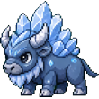

Tap a stage to read its story.
Frosthorn is a compact, stocky little goat with pale blue-grey fur and a cluster of small ice-crystal spines erupting from its back like a frozen mohawk. Its two stubby horns are already hard as granite. It stands on the lowest granite ledges of Granite Heights, head-butting pebbles off the edge and watching them fall with intense fascination. The high-altitude air suits it perfectly - it never slips, never tumbles, and cannot understand why any creature would stand on flat ground when a cliff-edge is available.
Field note: A Frosthorn can balance on a surface no wider than one centimetre, even asleep.
Granite Heights. Frosthorn and its family are found in the Granite Heights. See everyone who lives there.
Share a Bond Food that matches its types to become friends. Frosthorn loves:
A Bond Food is not a trick. It joins your spirit with the Kimuro's spirit, and only when it chooses you.
Print the Kimuro adventure packs: mazes, cards, a board game and Bond Mark medals.
See the printable packs